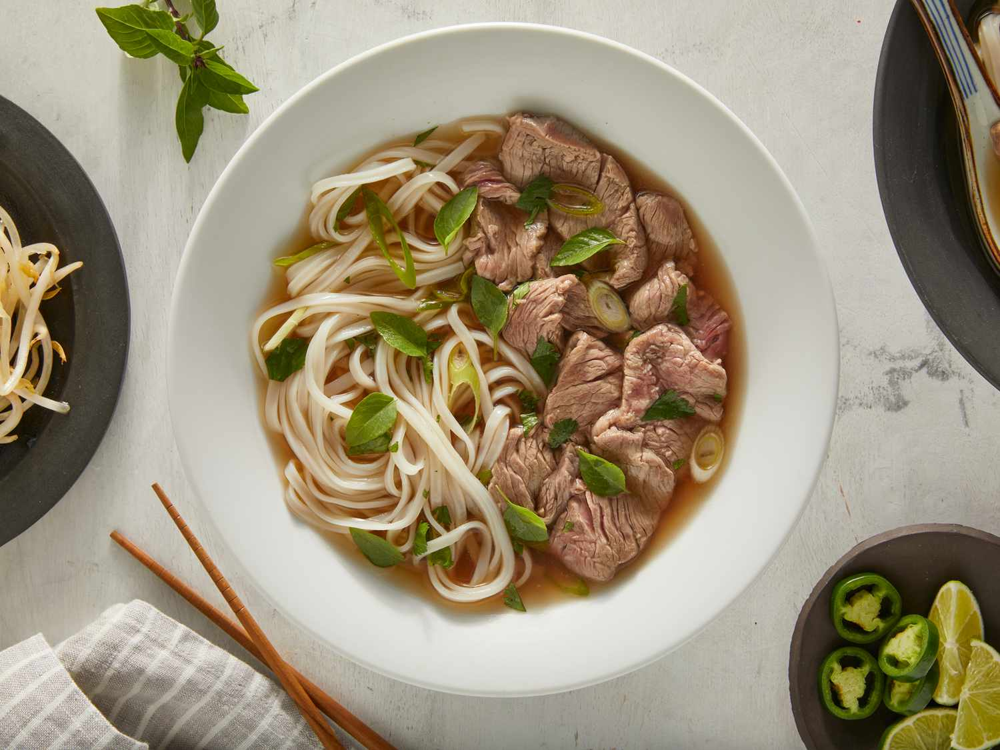

Pho

Description
Pho is a Vietnamese soup that has a base such as chicken or beef.
Ingredients for beef pho
- beef bone
- beef brisket
- onions
- ginger
- star anise
- cinnamon
- clove
- rice noodles
Steps to make beef pho
- Place onion and ginger onto stove until charred.
- Toast aromatics
- Rinse bones and beef
- Boil for 5 minutes then drain then rinse again
- Fill a pot with water
- Add beef bones,brisket, aromatics, and spices
- Simmer for three hours and enjoy